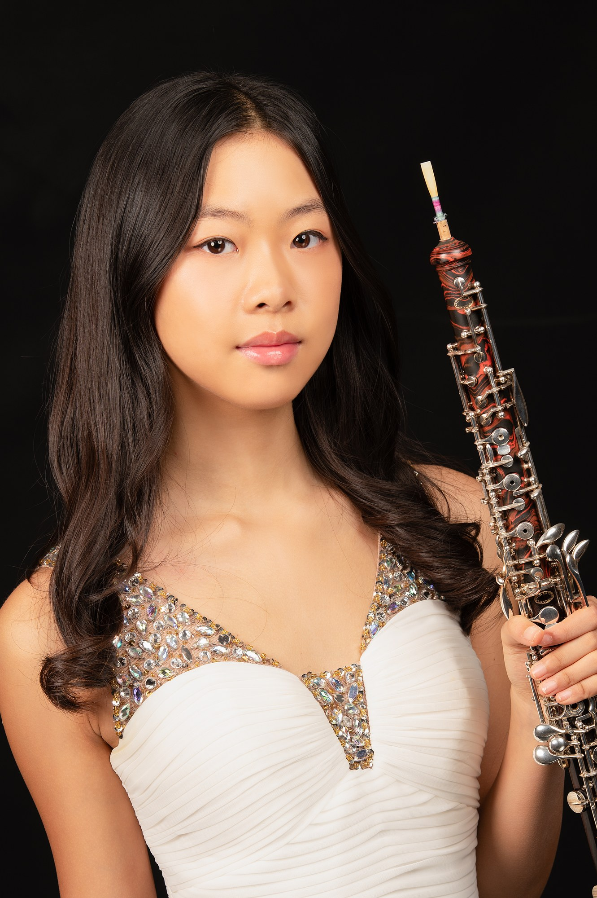

Irene Lee began her oboe studies at the age of eleven and quickly emerged as one of the most promising young oboists of her generation. A student at The Juilliard School Pre-College Division, she has distinguished herself at the national and international levels through both her artistry and her competitive achievements.
In 2026, Irene was honored by the National YoungArts Foundation with a Distinction award — one of the highest honors for young artists in the United States. In 2024, she made history at the Juilliard Pre-College Open Concerto Competition, becoming the first oboist in over two decades to win the competition. She also won First Prize at the NJ Soloist Competition. Other recognitions include selection as a finalist for the IYACC in Chicago and a Silver Medal at the Bravura Philharmonic Young Artists Concerto Competition.
Irene has been selected for the National Youth Orchestra of the United States (NYO2) in 2023 and 2024, and for the Verbier Festival Junior Orchestra in Switzerland in 2025 and 2026. In 2026, she was invited as a guest oboist by the Princeton University Orchestra — a rare distinction for a high school musician. In the summer of 2026, she will participate in the Tanglewood Oboe Workshop.
"The oboe speaks what words cannot — and Irene gives it a voice all her own."
Beyond music, Irene has a love for writing. In her spare time, she writes fiction, and is set to publish her first book — a novel of around 130 pages — in the near future.
Irene continues to bring a rare combination of sensitivity, technical precision, and genuine artistry to everything she does — on stage and on the page.